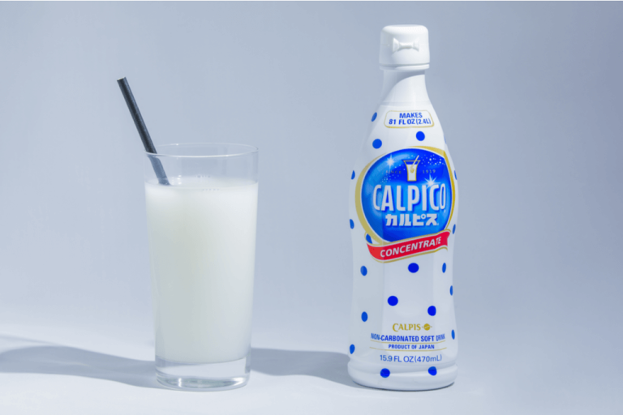

Ẩm thực Nhật Bản
Pocari Sweat

Pocari Sweat, đúng như tên gọi, là thức uống phục hồi toàn bộ chất điện giải và chất dinh dưỡng bị mất khi đổ mồ hôi. Tóm lại, đó là đồ uống thể thao đến từ Nhật Bản, được phát minh vào năm 1980! Người Nhật cũng uống Pocari Sweat khi bị cúm. Đồ uống này có sẵn ở dạng chai pet, lon và thậm chí ở dạng bột.
Calpis
Calpis được phát minh vào năm 1919 và được lấy cảm hứng từ sữa ngựa lên men của người Mông Cổ. Đó là thức uống axit lactic đầu tiên của Nhật Bản. Bạn có thể chọn kết hợp nó với bất cứ thứ gì bạn thích, đó là điều khiến nó trở nên phổ biến! Một số cách kết hợp phổ biến là Calpis pha với nước, soda Calpis có ga hoặc nước chanh trái cây, đặc biệt là dâu tây và dưa.
Matcha

Matcha (bột trà xanh) được sử dụng trong nhiều loại đồ uống khác nhau, không đường và ngọt, trà hoặc sữa latte và cũng rất phổ biến bên ngoài Nhật Bản, bạn thậm chí có thể gọi matcha latte tại Starbucks! Loại thức uống ngọt đắng này không chỉ có ở các quán cà phê mà còn được đóng chai ở các cửa hàng tiện lợi ở Nhật Bản.
cảm hứng ẩm thực
từ truyền thống đến hiện đại, tận hưởng cảm hứng từ các công thức nấu ăn mới nhất của chúng tôi
Sản phẩm mới
khám phá những sản phẩm mới của chúng tôi từ Nhật Bản